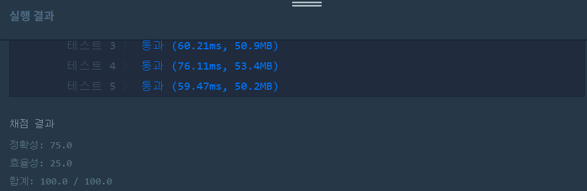
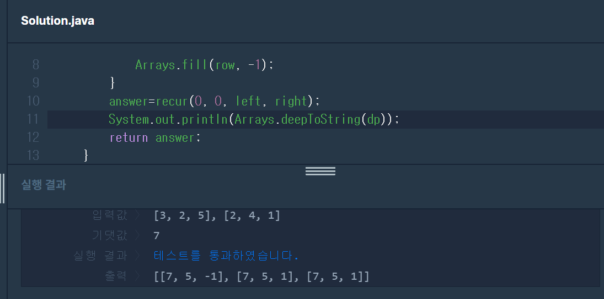

👀 문제
https://programmers.co.kr/learn/courses/30/lessons/42898
👊 도전
1. 설계
- 최종 점수가 최댓값이 되기 위해 어떤 카드를 버리며 게임을 진행할 지 선택해야하므로 모든 경우의 수를 다 따져야 한다.
- 현재 위치에서 왼쪽카드만 버릴 경우, 둘다 버릴 경우, 오른쪽 카드 숫자가 더 작아서 오른쪽을 버릴 경우에 따라 다음 점수를 계산하고, 이 중 최댓값을 선택해야하므로 재귀함수를 이용한다.
2. 구현 (성공 코드)
1
2
3
4
5
6
7
8
9
10
11
12
13
14
15
16
17
18
19
20
21
22
23
24
25
26
27
28
29
30
31
32
import java.util.*;
/**
*
* @author HEESOO
*
*/
class Solution {
int[][] dp;//l, r일때의 최댓값을 저장
public int solution(int[] left, int[] right) {
int answer = 0;
dp=new int[left.length][right.length];//배열 크기는 이곳에서 알 수 있으므로 여기서 초기화
for(int[] row:dp){//배열을 -1로 초기화
Arrays.fill(row, -1);
}
answer=recur(0, 0, left, right);//함수 호출
//System.out.println(Arrays.deepToString(dp));
return answer;
}
public int recur(int l, int r, int[] left, int[] right){
if(l==left.length||r==right.length){//둘중 하나라도 끝나면
return 0;
}
if(dp[l][r]!=-1){//값이 계산되었다면(중복계산 방지)
return dp[l][r];
}
dp[l][r]=Math.max(recur(l+1, r, left, right), recur(l+1, r+1, left, right));//왼쪽만 버릴지, 둘다 버릴지 결정
if(left[l]>right[r]){//오른쪽도 버릴 수 있을 경우
dp[l][r]=Math.max(dp[l][r], recur(l, r+1, left, right)+right[r]);//버리는게 이득인지 확인
}
return dp[l][r];
}
}
3. 결과
 🤟 성공 🤟
4. 설명
- 배열 dp는 전역변수로 선언한다.
- 재귀함수에서 배열에 값을 저장해야하기 떄문이다.
- recur에 파라미터로 넘길 경우 위치에 따라 배열에 값이 존재하지 않을 수도 있다.
- dp[l][r]은 현재 l, r카드에서 얻을 수 있는 최댓값을 저장한다.
- 배열 dp는 방문하지 않은 것을 알 수 있도록 표시해야한다.
- 나는 -1로 초기화해서 아직 값이 저장되어있지 않음을 나타내주었다.
- 0으로 초기화하면 애매하다. 왼쪽이나 둘다 버릴 경우 점수가 0이기 때문이다.
- 재귀호출을 통해 왼쪽과 둘다 버리는 경우 중 어느게 더 큰 점수를 리턴하는지 확인한다.
- 왼쪽보다 오른쪽이 더 작다면 오른쪽을 버리는 경우도 확인한다.
- 위에서 왼쪽이나 두개 다 버린 것 중 최댓값이 저장되었으므로 이것과 오른쪽만 버리는 경우를 체크해서 더 큰 값을 저장한다.
- 이때 오른쪽만 버린다면 오른쪽 카드의 숫자만큼 점수를 얻을 수 있으므로 뒤에 +right[r]을 추가한다. 점수를 획득한 것을 나타내었다.
- l 또는 r이 끝난 곳에서부터 0을 리턴해서 타고타고 올라가며 계산한다.

- 맨처음 recur(0,0,left,right)호출을 시작해서 모든 경우의 수에 따라 재귀호출 경로가 만들어진다.
- 맨 마지막에 l 또는 r이 끝난 곳에서 0을 리턴하고, 다시 타고타고 올라가며 +right[r]이 있는 곳에서는 점수를 획득하게 된다.
- 마지막에는 dp[0][0]까지 다시 되돌아 올 것이고, 여기에 최종값이 저장된다.
👏 해결 완료!
뭔가 알 것 같으면서도 아닌 것 같기도 하고 어려운 재귀의 세계…
참고
- 백준 10835번. 카드게임 (Java) https://bcp0109.tistory.com/54
- [ 백준 11062 ] 카드게임 https://wan088.github.io/algorithm/2018/07/15/algo-cardgame/#fn:1